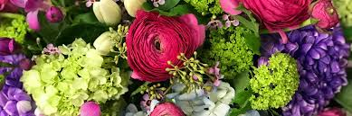

OpenCms 8 Demo Websitewonderful world of flowers |
|
Welcome OpemCMS |
Release Notes |
Template III Demo |
|
Template III Demo>>String page |
|
String page Flower Today Flower Dictionery Flower Spesical Flower Extrean Flower Serch |
Wonderful world of flowersWonderful of world flower present the most spectacular and amazing stories about flowers about araunds the world. Entertaining whit lost of usles information.Let us take you into the advertion world of flowers around the world Overview
|
|
Build whit OpenCMS Source Cms ,provided by Alkakon-The OpenCMS Expert |